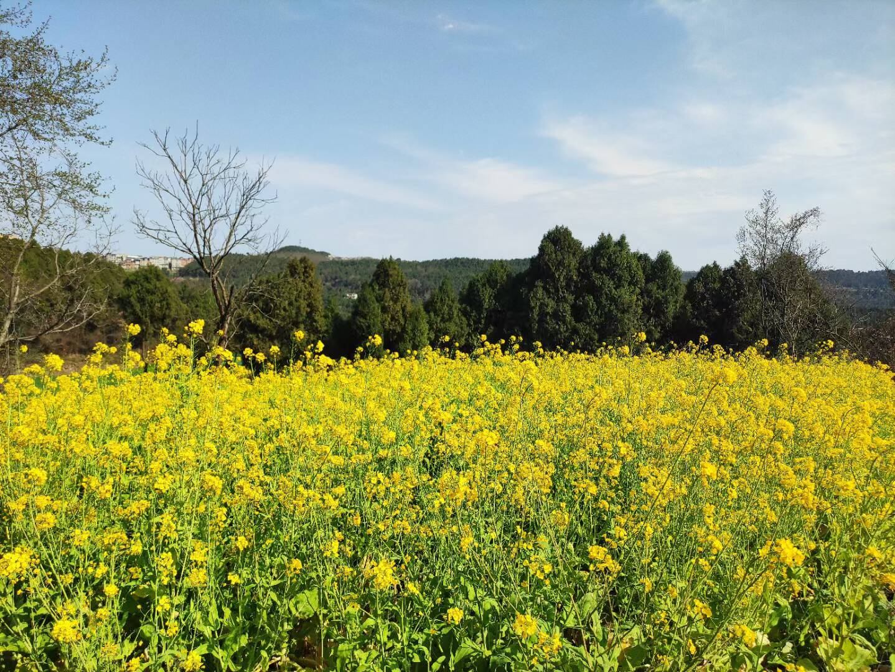

回家
本文最后更新于 2024年7月13日 凌晨
上了大学，回家次数也少了起来。虽然在川内上大学，但这学期以来因为各种各样的事情，还没回过家。
小时候总是希望离家远一点，熟悉的地方早就看烦了，后来实现了这个愿望，但是家乡却变得亲切起来了。
起因是今天读到一侧新闻，中储粮油罐车矿物油食用油混装:
早在2005年，《南国早报》就报道过“罐车清洗难防交叉污染，拉完危险化学品后又拉食品”；湖南省衡阳市在2013年也曾发布过“关于严厉打击违法违规运输食用油的通知”。
2017年，有德国实验室检测出老干妈、海天等国产品牌的矿物油超标，违反欧盟和美国的相关标准，然而当时却被《环球时报》视为对中国品牌的敌意打压。
在中储粮首次承认食用油、煤制油等化工类液体油罐车混装后，央视网如此怒斥。然而骂归骂，中储粮的表态只是“引以为戒”，没有道歉，没有召回，没有赔偿，也没有处理责任人。
直到这次曝光后，公众才赫然发现，原来这早已是行业内公开的秘密。混合运输这些油料的司机当然都清楚得很，但他们的自我辩解是：“大货车拉一趟不容易”、“我们开运输的不挣钱”、“清洗一次车厢太贵了”。
半年多前，《新京报》就曾报道“山西一危化车司机清洗槽罐时中毒身亡”，当时微博底下一条留言读来令人悚然：“危险品洗完，再装食用油，不然洗它干嘛？
有一点黑色幽默的感觉，这下众生平等，感觉全国除了特供单位之外，所有的人都吃过煤油之类的矿物油。
看到这则消息我却比其他人要好受一点，为什么呢？
因为我家从不在超市买食用油，我家的油是外公外婆亲手种出来的。小时候在家的时候，每年春天我都能看到盛开的油菜花田，每年夏季我在街上都能闻见榨油的香味。当油菜收获的时候，油菜籽很小，像干燥的细沙一样，非常光滑细腻。

以前我总担忧这样榨油不如工厂批量生产的干净卫生，这下我释然了，亲手榨的油里无论如何不会有煤油存在。这也说明，至少在儿时我吃到的矿物油比别人要少。以前总觉得有机产品是智商税，这一刻我懂得了它的含金量。
我记得一件奇怪的事，在上高中时，我妈以前来学校看我，总抱怨说吃了学校周边的油肠胃不舒服。我当时老爱嘲讽她，认为她比我还矫情。肠胃不舒服的原因当然最有可能是她吃不惯，但今天我突然想到，这其中有没有煤油的作用呢。
有人借这件事说中国人人平等，但事实上是不平等的。中国很大，至少阳光和土地不会缺。